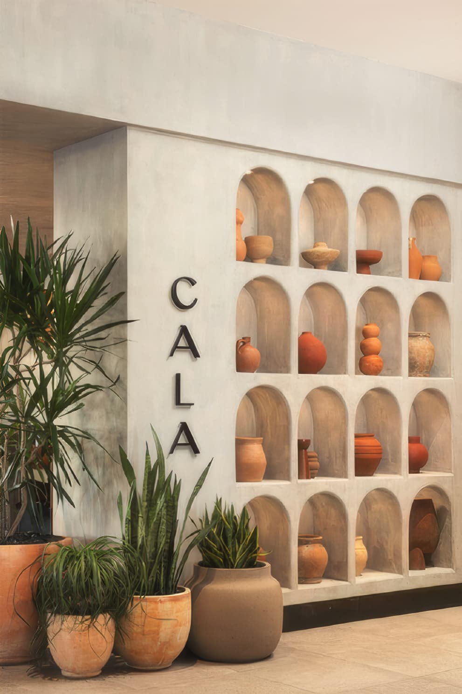
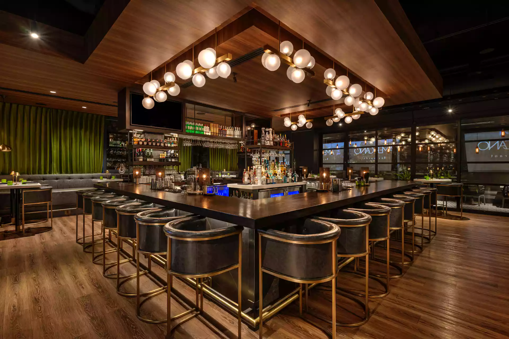
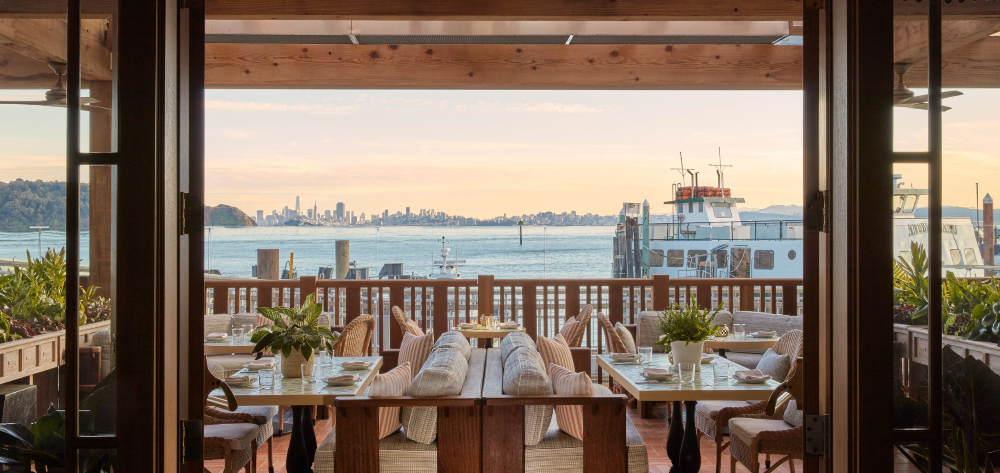

How Clive Solves Problems
Challenge. Move. Operating lesson.
From Vague Accountability to Controlled Shift Handoffs
Shift accountability at Cala was undefined. Food runners started and ended shifts without a structured check-in or check...

Fixing Cancellation and No-Show Execution
Cancellations and no-shows were handled inconsistently. Confirmation at check-in was not always performed correctly. Whe...

A Process Correction for Menu Execution
A signature menu item was being overcooked due to the existing preparation method. The oven-based cooking process was pr...
Cross-Concept Guest Journey Thinking
Late-night guests at Tell Your Friends and dinner guests at The Americano operated as separate audiences with no designe...

Managing a Major Menu Transition
A significant menu transition required coordination across manager logs, staff training, revised service standards, and ...
Unknown Stays Unknown Until the Data Exists
Polished-looking reports were being produced even when current-period source data was incomplete or missing. The reports...